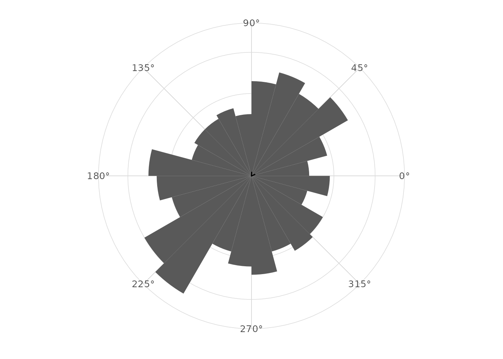
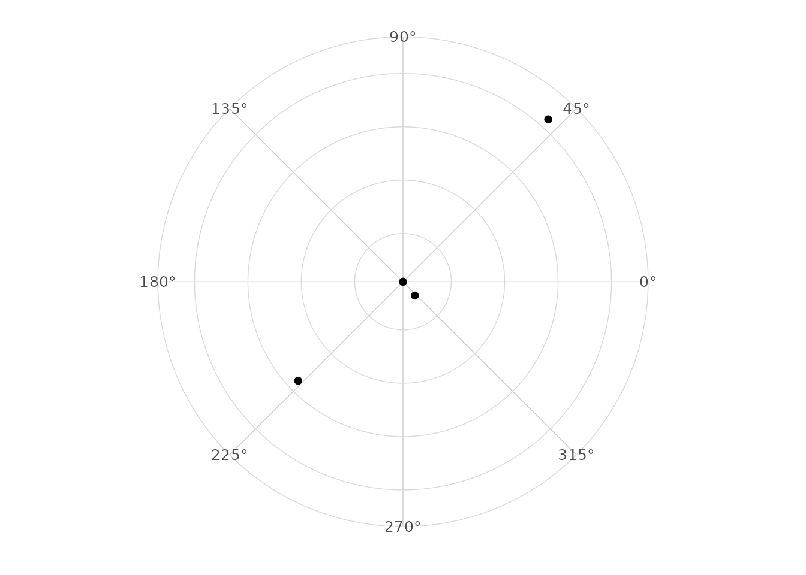

Mean direction and uncertainty
Source:vignettes/mean-direction-and-uncertainty.Rmd
mean-direction-and-uncertainty.RmdCircular mean
The circular mean is computed from the mean cosine and sine components. This avoids the boundary problem that affects arithmetic means.
library(ggplot2)
library(dplyr)
#>
#> Attaching package: 'dplyr'
#> The following objects are masked from 'package:stats':
#>
#> filter, lag
#> The following objects are masked from 'package:base':
#>
#> intersect, setdiff, setequal, union
library(ggcircular)
circular_summary(wind_directions, direction)
#> # A tibble: 1 × 7
#> n mean R Rbar variance sd kappa
#> <int> <dbl> <dbl> <dbl> <dbl> <dbl> <dbl>
#> 1 500 4.10 24.7 0.0494 0.951 2.45 0.0989Why arithmetic means fail
Angles close to 0 and 2 * pi are close on
the circle but far on the real line. Component-based averages respect
the circle.
Resultant length
The mean resultant length Rbar is between zero and one.
Values near one indicate concentration near a common direction; values
near zero indicate weak or cancelling directionality.
Mean by group
wind_directions |>
group_by(season) |>
circular_summary(direction)
#> # A tibble: 4 × 8
#> season n mean R Rbar variance sd kappa
#> <chr> <int> <dbl> <dbl> <dbl> <dbl> <dbl> <dbl>
#> 1 fall 131 5.42 106. 0.811 0.189 0.647 3.00
#> 2 spring 115 2.36 92.3 0.802 0.198 0.664 2.89
#> 3 summer 138 3.90 120. 0.870 0.130 0.528 4.15
#> 4 winter 116 0.842 105. 0.904 0.0956 0.448 5.52Displaying the mean
ggplot(wind_directions, aes(x = direction)) +
geom_rose(bins = 24) +
geom_mean_direction(length = "resultant") +
scale_x_circular_degrees() +
coord_circular() +
theme_circular()
Arcs of uncertainty
stat_mean_direction() computes approximate confidence
limits when conf.int = TRUE.
geom_confidence_arc() can display any angular interval
stored as lower and upper endpoints.
summaries <- wind_directions |>
group_by(season) |>
circular_summary(direction)
ggplot(summaries, aes(x = mean, y = Rbar)) +
geom_point() +
scale_x_circular_degrees() +
coord_circular() +
theme_circular()